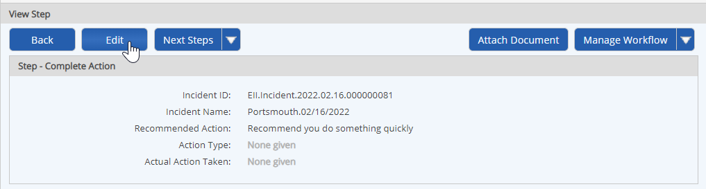

If you have the appropriate field permissions on a workflow, you can edit the information on any of the workflow steps while the workflow is still open to change field values in the step form. You may also add comments, if you have permission.
Permissions to edit step fields and add comments are granted through any workflow role you are a member of, unless you have Manage Workflows right.
To edit a workflow step:
Open the Workflow Overview.
From the Workflows panel on a dashboard, select the Workflow Name link.
From a workflow step form, click the Workflow Overview link at the top of the page (opens in a new window).
From Workflows Manager (Tasks and Workflows page), right click the workflow and choose View.
From the Calendar, right click the workflow icon and choose View.
In the Steps list, select the link to the step you want to edit.
If the step is already complete, the step is opened in view mode. Click Edit to open it in edit mode.

The fields you have permission to modify are shown in editable form.